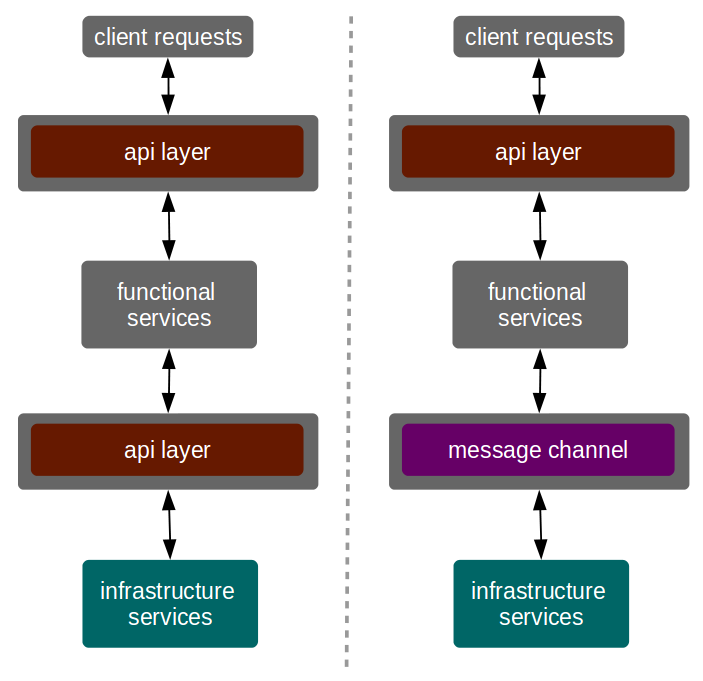

Microservices vs. Service-Oriented Architecture (Review)
Table of Contents
This is a report of Richards, M. (2015). Microservices vs. Service-Oriented Architecture. (N. Barber & R. Roumeliotis, Eds.). 1005 Gravenstein Highway North, Sebastopol, CA 95472. O’Reilly: O’Reilly Media, Inc. Retrieved from https://www.nginx.com/microservices-soa/.
1 Overview
This book draws a comparison between SOA and Microservices architecture. It is presented some differences between the two approaches, but it is also presented some common points. The comparison is made by comparing the two architectures taking into account a variety of properties and parameters.
The book is well written and the ideas are well presented. However, the author says: "Unfortunately, companies learned the hard way that SOA was a big, expensive, complicated architecture style that took too long to design and implement[…]", but in some point later, he also says that the book will help to pick the more suitable architecture (SOA or microservices) for a particular situation. I wonder if an architecture with properties like "big, expensive, complicated architecture style and that takes too long to design and implement" should be a suitable alternative for some particular situation. In other words, the author seems to be a little biased for microservices' side.
2 Important definitions
This book brings important definitions to the microservice context, such as:
- modularity: the practice of encapsulating portions of the application into self-contained services with little or no dependency on other components or services;
- service contract: an agreement between a service and a service consumer that specifies the inbound and outbound data;
- service availability: the ability of a remote service to accept requests in a timely manner;
- BASE transactions: strive for eventual consistency in a database rather than consistency at every transaction;
- service: a mechanism to enable access to one or more capabilities.
- component: a unit of software that has a well-defined interface and a well-defined set of roles and responsibilities;
- service orchestration: the coordination of multiple services through a centralized mediator;
- service choreography: the coordination of multiple services without a central mediator. It is also called inter-service-communication;
This book also brings a taxonomy to classify microservices. The taxonomy consists of two service types:
- functional services: support specific business operations;
- infrastructure services: support nonfunctional operations, such as authentication, log, monitoring, etc.
On the other hand, SOA has a much more rich taxonomy for services, which includes business services, enterprise services, application services, and infrastructure services.
The author defines REST as a protocol, what would be a simple way to describe it. However, It is necessary to emphasize that REST is not a protocol, but a set of constraints to build distributed systems.
3 SOA vs Microservices
The author considers microservices architecture as something different from SOA, whereas some authors state that Microservices is a subset of SOA, or a different way to implement SOA. SOA and microservices have some points in common. The first one is the fact that both architectures are considered service-based and also distributed architectures, which implies that the services are accessed remotely.
3.1 Development teams allocation and service granularity
In SOA architecture, teams are usually responsible for implementing just one type of service. A given team may be responsible for some business services and another team may be responsible for some infrastructure services, for instance. In another way, in the Microservice architecture, teams take responsibilities for both functional and infrastructure services.
Another difference is related to teams and business request. In SOA, there is the need to coordinate multiples teams to create or maintain a single business request, resulting in a great effort and time involve and maintain services. on the other hand, with microservices, there is little or no coordination among services to fulfill a single business request.
Despite the development team allocation problem has been related to service granularity, the main concern regards on teams. On top of that, service granularity affects the performance of services, and also the transaction management. A piece of good advice the author gives is a quote from Sam Newman that says: "Start with a small number of larger services first".
3.2 Component sharing
SOA and microservices take different approaches for sharing components. While SOA adopts the share-as-much-as-possible whereas microservices adopts share-as-little-as-possible. The style adopted by microservices is influenced by bounded context described by DDD (Domain Driven Design), which refers to put things together in order to achieve the minimal dependency level among components. That sounds the opposite to the microservices philosophy if we do not take into account that a microservice should implement just on bounded context, limitation not present in SOA style.
The way components are shared leads to another difference between the two architectures. SOA tends to use service orchestration while microservices tends to adopt choreography. The adoption of choreography by microservices is because of the lack a centralized middleware, which it is not a problem to SOA In spit of microservices adopt choreography, the share-as-little-as-possible tells to avoid communication among services, restricting interactions only between functional and infrastructure services.
The authors states that the use of orchestration is minimal or even not used at all in microservices. However, if a API layer (or API gateway) is used, the orchestration is a important part of the architecture.
3.3 Accessing remote services
The way remote services are accessed represents a fundamental difference between SOA and microservices. Microservices tend to rely on REST or simple messaging (JMS and alike) as the primary communication style, whereas SOA is open for more communication approaches. Moreover, microservices tend to keep the homogeneity on communication approach, while SOA is open for heterogeneous communication approaches.
3.4 Architecture capabalities
The author compares SOA and microservices taking into account the architecture capabilities, such as the size of application suitable for a given architecture, the type of components and the ability of the architecture deal with contract decoupling.
Considering the suitable size of application, the author states that SOA is a better choice for large and complex systems, that have many shared components. However, smaller applications that have few shared components, and applications that can be split into small self-contained services are better implemented through the microservices architecture.
With regard to the type of components, SOA is better to deal with heterogeneous components, once this architecture has available a middleware capable of make translation, mediation and conversations among several protocols and technologies. In another hand, microservices attempts to simplify the architecture by reducing the number of choices for services integration, mainly on REST ans simple messaging.
The last capability analyzed is the coupling level between services and their consumers, which implies that services and consumers are able to evolve independently. There are two primary forms of contract decoupling: message transformation and message enhancement. According to the author, SOA is a better option if there is the need of data transformation or data enrichment, because of the presence of a middleware. Moreover, microservices does not support contract decoupling.
4 Discussion points
The author states that are two basic types of service contracts: service-based and consumer-driven. In the service-based contract, the server doesn't care if a change in the contract will create an incompatibility to a service consumer. On the other hand, consumer-driven contracts take into account the service consumers' needs. This type of contract requires the server to know who are its consumers, and know how the service is used by each service. Despite this limitation, service consumers are free to suggest changes to the services. This feature brings up new opportunities to explore dynamic service behavior, where a service could provide different services based on consumers' needs in an automated fashion. However, the way that services consumers will give a suggestion and how services will understand and apply the suggestion still open.
According to the author, a service must have a well-defined service contract. Does a service without a well-defined contract not considered a service. I do not agree with that, actually, I believe that services should not have well-defined static contracts. When we talk about contracts, we are generally talking about static contracts. In order to provide the flexibility to support some changes in the service, a service contract should be defined in run-time, and the service consumers should be able to understand the contract in run-time, instead of being developed based on a static contract defined in design-time.
Despite microservices reduce the inter-service-communication, it still needs a significant communication effort to coordinate functional and infrastructural services. Similar to the API layer (API gateway) is used to create a service vision to service consumers and, at the same time it eliminates the need to know details about microservices, an API layer would be useful to coordinate the communication between function and infrastructure services. Figure 1 shows two alternatives of microservices layers. The first one uses another API layer to create a facade for infrastructure services. The second one uses a message broker to establish communication between functional and infrastructure services based on events.

Figure 1: Two alternative of layers for modeling microservices
The author talks about contract decoupling in terms of message transformation and enhancement. However, there is much more to consider when talking about contracts. IMHO, contracts should guide service consumers on how to interact with services, in terms of communication details such as protocol to use, payload format, pre- and pos-conditions, and so on. The way it is presented sounds that data transformation and enhancement must be performed exclusively by middleware, restricting those operations only on SOA. However such operations could be performed by infrastructure services into a microservices architecture with the same or similar results. Furthermore, none of the architectures SOA or microservices are able to decoupling contracts without mechanisms for describing services in terms of their semantics. It is also mandatory, the service consumers being able to understand service contracts semantics in a dynamic fashion, and not be developed based on a static contract.
5 Conclusions
This book compares two architectures SOA and microservices. The author takes into account both architectural properties and capabilities. Regardless of the properties and capabilities, service granularity seems to be the central point and source of differences, which has influence over other properties and capabilities.
Microservices is not about small services, but services that implement a well-defined bounded context (what should be small, or at least not too big). At first glance, microservices should increase the fragmentation of services, which implies more effort in communication. That is not completely true, once a microservice should implement everything to handle a single business request. In that way, SOA represents a more fragmented architecture.